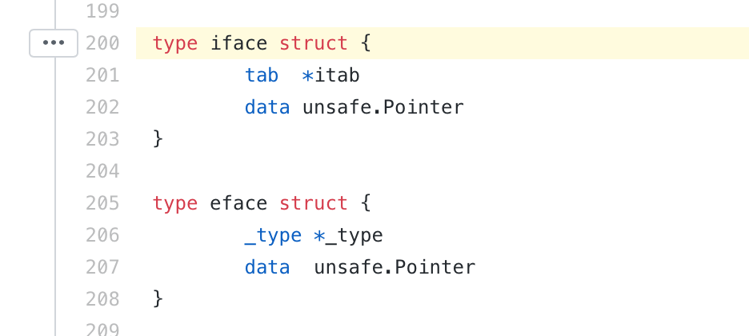
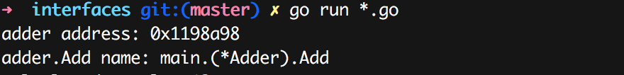

Go interface代表一组方法的集合，凡是实现这组集合的对象都称之为实现了这个接口，具体的对象不必像其它编程语言比如Java那样必须显示的Implement某个或者某些接口，所以说Go的接口类型是鸭子类型(Duck type)。
“当看到一只鸟走起来像鸭子、游泳起来像鸭子、叫起来也像鸭子，那么这只鸟就可以被称为鸭子。”
当然， 对于一个Go基本入门的开发者来说，这些概念早就深入人心，那么Go是如何实现接口和具体类型的转换的呢？
比如下面的一段代码，定义了一个接口Op以及一个具体实现Adder。Op接口包含一个Add方法，而Adder具体实现了这个方法，因此我们称Adder实现了Op接口。
1 2 3 4 5 6
| type Op interface{ Add(a, b int32) int32 } type Adder struct{} func (adder Adder) Add(a, b int32) int32 { return a + b }
|
然后我们可以把Adder的实例可以赋值给Op类型的变量:
1 2 3 4 5
| func main() { adder := Adder{} var op Op = adder op.Add(10, 32) }
|
事实上，Go编译器在背后默默做了很多的工作，因为op的类型和adder的类型是不一样的，一个是interface一个是struct，它俩的数据布局都不是一样的，编译器在编译的时候做了转换。
编译器会为用到的接口和具体实现类型建立独一的关联对象go.itab."main".Adder,"main".Op(SB)。

在编译接口的方法调用的时候会将具体的类型实例地址和方法填充到此类型中，通过操作这个类型调用实例的方法。
现在网上已经有一些介绍Go 接口内幕的文章，目前我觉得介绍最深入最详细的是o-internals ch2 interfaces, 也被翻译成了中文: Go语言内幕第二章 接口，我觉得如果你仔细阅读了这篇文章，应该能够清楚了了解Go接口的具体实现了。
那么，进一步，我们可以通过hack的方法看看接口类型到底是个啥，纯粹是了解一下Go接口类型接口以及通过指针反解出方法来，当然这些hack方式并没有实践意义，纯粹为了好玩。
通用的接口类型是runtime.iface （runtime.eface是特意为interface{}定义的，因为interface{}没有方法集，所以可以在runtime.iface简化），如果我们把它从runtime下摘出来，那么代码如下：
1 2 3 4 5 6 7 8 9 10 11 12 13 14 15 16 17 18 19
| type iface struct { tab *itab data unsafe.Pointer } type itab struct { inter *interfacetype _type *_type hash uint32 _ [4]byte fun [1]uintptr } type interfacetype struct { typ _type pkgpath name mhdr []imethod } ......
|
定义了好多类型，我们把这些类型压缩在一个struct中，那么可以得到下面的接口类型的定义:
1 2 3 4 5 6 7 8 9 10 11 12 13 14 15 16 17 18 19 20 21 22 23 24 25 26 27 28 29 30 31 32 33 34 35 36 37 38 39 40 41 42 43 44 45 46 47
| type iface2 struct { tab *struct { inter *struct { typ struct { size uintptr ptrdata uintptr hash uint32 tflag uint8 align uint8 fieldAlign uint8 kind uint8 equal func(unsafe.Pointer, unsafe.Pointer) bool gcdata *byte str int32 ptrToThis int32 } pkgpath struct { bytes *byte } mhdr []struct { name nameOff ityp typeOff } } _type *struct { size uintptr ptrdata uintptr hash uint32 tflag uint8 align uint8 fieldAlign uint8 kind uint8 equal func(unsafe.Pointer, unsafe.Pointer) bool gcdata *byte str int32 ptrToThis int32 } hash uint32 _ [4]byte fun [1]uintptr } data unsafe.Pointer }
|
tab是接口的元数据(inter)、具体类型的元数据(_type)、接口的虚函数列表(fun)，具体类型的地址(data)等数据组成，这写类型Go并没有暴露出来，所以我们可以自己定义，并通过unsafe的方式把一个接口对象转换成我们定义的类型：
1 2 3 4 5 6
| type addFun func(*Adder, int32, int32) int32 func testiface(adder *Adder, op Op) { var ifa = (*iface2)(unsafe.Pointer(&op)) fmt.Printf("%+v\n", ifa) }
|
得到了ifa对象你可以尝试输出它的一些字段看看，看看是否是期望的结果。
注意到ifa.tab.fun是接口的虚函数列表，这里的🌰中使用adder.Add填充，本例中只有一个函数。那么我们可以想办法从ifa.tab.fun得到函数对象，并调用它。
ifa.tab.fun[0]得到这个函数的地址，使用runtime.FuncForPC可以得到它的名称和方法体。
1 2 3 4 5
| func testiface(adder *Adder, op Op) { var ifa = (*iface2)(unsafe.Pointer(&op)) f := runtime.FuncForPC(ifa.tab.fun[0]) fmt.Printf("adder.Add name: %s\n", f.Name()) }
|
可以看到可以正确的输出函数的名称。

下一步我们构造出函数来，然后调用它。首先我们定义一个函数类型，方法也是一种函数，只不过方法的Receiver作为函数的第一个参数：
1
| type addFun func(*Adder, int32, int32) int32
|
然后通过反射，基于方法体创建出一个函数出来，并赋值给一个变量。
1 2 3 4 5 6 7 8 9 10 11 12
| type Func struct { codePtr uintptr } func createFuncForCodePtr(outFuncPtr interface{}, entry uintptr) { outFuncVal := reflect.ValueOf(outFuncPtr).Elem() newFuncVal := reflect.MakeFunc(outFuncVal.Type(), nil) funcValuePtr := reflect.ValueOf(newFuncVal).FieldByName("ptr").Pointer() funcPtr := (*Func)(unsafe.Pointer(funcValuePtr)) funcPtr.codePtr = entry outFuncVal.Set(newFuncVal) }
|
下一步就是调用这个生生造出来的函数了：
1 2 3 4 5 6 7 8 9 10 11 12 13 14 15 16 17 18 19 20 21 22 23 24 25 26
| type addFun func(*Adder, int32, int32) int32 func testiface(adder *Adder, op Op) { var ifa = (*iface2)(unsafe.Pointer(&op)) f := runtime.FuncForPC(ifa.tab.fun[0]) fmt.Printf("adder.Add name: %s\n", f.Name()) var fn addFun createFuncForCodePtr(&fn, f.Entry()) v := fn(adder, 10, 32) fmt.Printf("calculated result: %d\n", v) } type Func struct { codePtr uintptr } func createFuncForCodePtr(outFuncPtr interface{}, entry uintptr) { outFuncVal := reflect.ValueOf(outFuncPtr).Elem() newFuncVal := reflect.MakeFunc(outFuncVal.Type(), nil) funcValuePtr := reflect.ValueOf(newFuncVal).FieldByName("ptr").Pointer() funcPtr := (*Func)(unsafe.Pointer(funcValuePtr)) funcPtr.codePtr = entry outFuncVal.Set(newFuncVal) }
|
虽然无聊的绕来绕去的演示了将接口对象转换成一个interface struct，并调用它的虚函数，但是通过这个演示，我们可以比较深刻的了解go接口的具体实现，以及go里面的一些小trick。